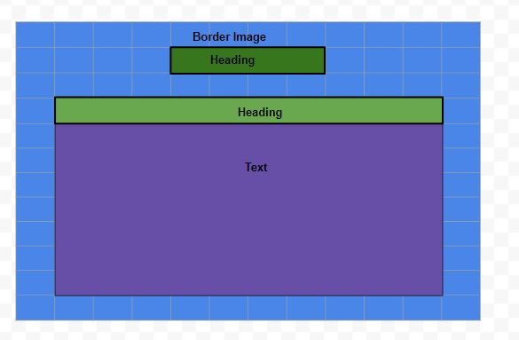
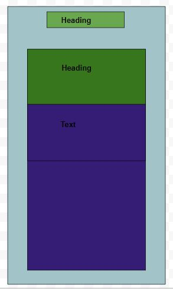
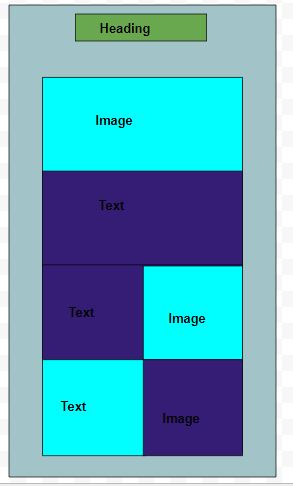

“Take chances, make mistakes, get messy!”
Ms Frizzle - The Magic School bus
So I pulled my blog apart and put it back together....
What a responsive site is, and why responsiveness is important.
You know how you can make a website really tiny to a point and the screen moves around to fit the resized screen? That's a responsive website design. Why is this cool? Because you can see it well on your phone whiel you're on the train.
Why is it important? Becasue more and more people are using mobiles to access the internet making it so they can see your site means people will go visit it and use it.
What mobile first design is, and why it's important.
Basically mobile first design is all in the name, it about creating a site or internet thingy with a mobile (phone, tablet, iPad) in mind.
What frameworks are there and their pros and cons.
Responsive web design
So again, you know how you can make a website really tiny to a point and the screen moves around to fit the resized screen? That's a responsive website design. Pros are user experience friendly, you save cost on responsive web design development and its search engine optimization friendly so people can find it.
Cons include, bad compatibility for the old version of IE browser, please note if you are using or someone you love is still using Internet Exployer, for the love of all taht is holy please get onto Chrome! IE doesn't support Javascript its an easy to compromise browser please stop using it. It can aslo take some time to load because its a bit bigger than a normal site and making a reposive site can be a bit of a time suck to make.
Progressive inhancement & Graceful Degradation
Big words I get it but easy concepts. Progressive inhancement is basically Lite version of Facebook messenger or any lite app really. Its built specifically for the lower tech browser on a phone. While Graceful Degradation is I built and made a kick ass site and then changed at to be mobile friendly.
Mobile first is starting on your phone and building things and then making a site. Traditionally you go site first and then mobile. Mobile first is the other way around. Simple as that!
Cons of Progressive Inhancement are they aren't supported by all browsers and nor by all devices which is a biggy right there. You can't use a framework if its not supported.Cons of Graceful Degradation is essentially making the square block fit in the circle shape hole. Much like the puzzle as a kid it can be a time suck and require alot of maintence to keep up with what the mobile platform is doing.
What a wireframe is and why we use it.
Here are my wireframes of my previous site before I redesigned it. Its basically the dev version of a mock up. You draw what you want to make so you ahve goal and a visual representation of what you're coding.




The aspects of your wireframes you found difficult to implement, and why.
It was getting teh boxes in the right place and putting things in the middle and looking centred. As you can see I gave up after awhile. The more I practice doing this the better I'll get at it.